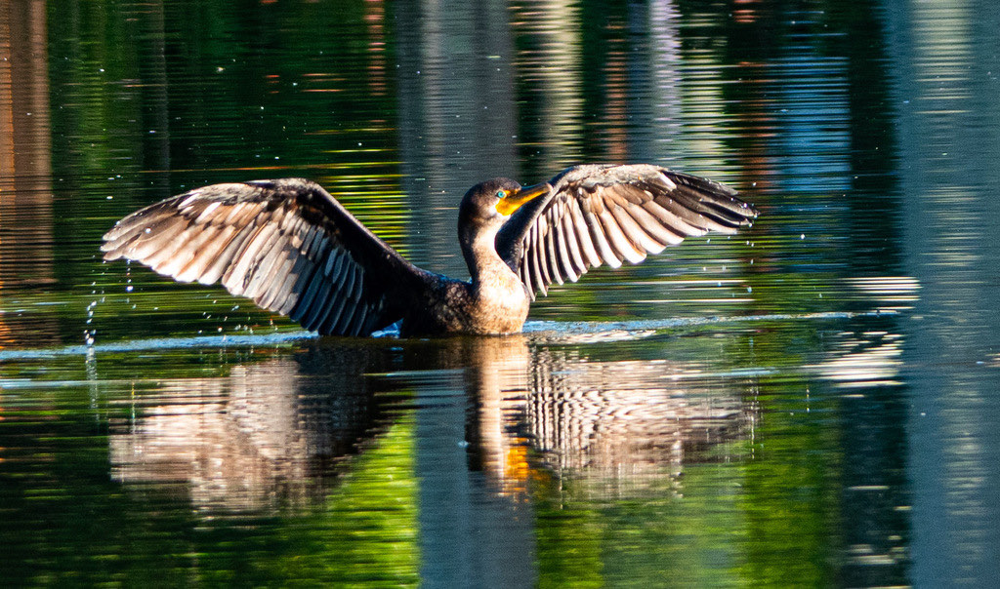

- The double-crested cormorant is a sleek black diving bird that you will often see swimming low in the water or perched with its wings held open to dry.
- Like the anhinga it shares the ponds with, its feathers are not fully waterproof — a trade-off that lets it dive and chase fish underwater.
- It is a strong, agile underwater swimmer, propelling itself with webbed feet to catch fish in fast pursuit.
- The easiest way to tell it from the similar anhinga: the cormorant has a hook-tipped bill and a shorter tail, while the anhinga's bill is straight and pointed.
All dark, blackish, with a patch of orange-yellow bare skin at the base of the bill.
Slender with a distinct hook at the tip.
Bright blue-green up close.
Swims low with its bill tilted slightly upward.
Usually silent away from the colony, where it gives low, pig-like grunts.
A dark water bird swimming low or perched with wings spread to dry. The hooked bill, orange face patch, and shorter tail separate it from the anhinga, whose bill is straight and tail longer.
Mainly fish, caught by diving and chasing them underwater. It also takes the occasional crayfish, amphibian, or aquatic insect.
On the open ponds, swimming low, and perched on snags, posts, or banks with wings spread to dry in the sun.
Year-round resident. Often easiest to spot perched and drying its wings in the morning.
Watch from a distance and do not feed it. Give perched, wing-drying birds space so they can warm up undisturbed.


- © Rob Carr (CC-BY-NC), via iNaturalist
- © joycem1218 (CC-BY-NC), via iNaturalist